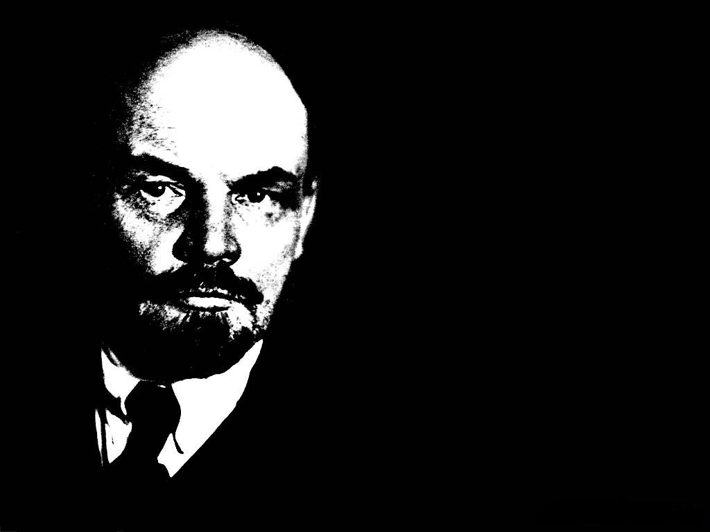
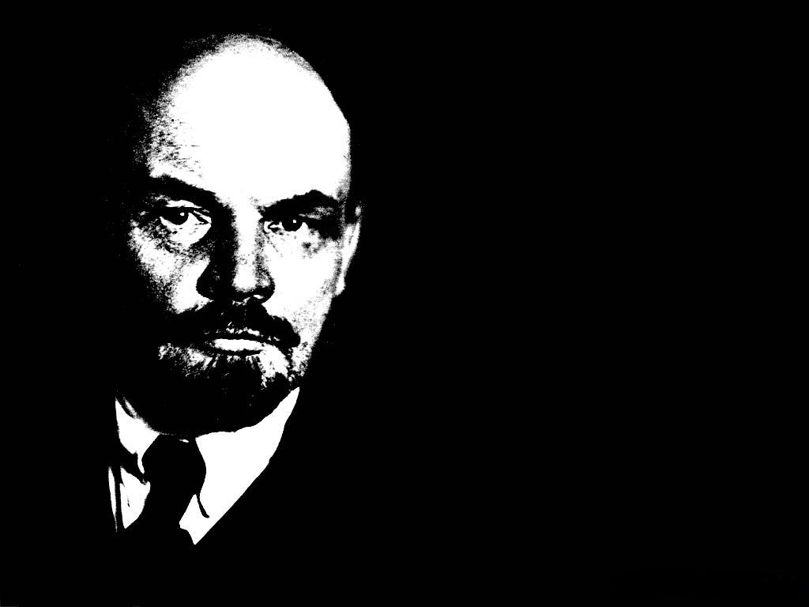

"Without a revolutionary theory there cannot be a revolutionary movement " - Vladimir Lenin


Lenin masuk Universitas Kazan pada Agustus 1887. Di sana, ia bergabung dengan zemlyachestvo, yaitu semacam perhimpunan universitas yang mewakili laki-laki dari wilayah tertentu. Kelompok tersebut memilih Lenin sebagai anggota perwakilan di dewan zemlyachestvo universitas tersebut, dan pada bulan Desember, ia ikut dalam unjuk rasa melawan kebijakan pemerintah kekaisaran Rusia yang melarang perhimpunan pelajar.

Pada akhir tahun 1893, Lenin pindah ke Saint Petersburg, Di sana, ia bekerja sebagai asisten barister, dan pada saat yang sama ia juga memperoleh jabatan senior di dalam sebuah kelompok revolusioner Marxis yang menyebut diri mereka "Demokrat Sosial"
Lenin bermukim di Pskov pada awal tahun 1900. Di sana, ia mulai menggalang dana untuk sebuah surat kabar,Iskra “Percikan Api", yang merupakan organ baru Partai Marxis Rusia.Di sebuah konferensi di Corsier, mereka bersepakat untuk menerbitkan surat kabar tersebut di München

pencapaian
pencapaian
pencapaian
pencapaian